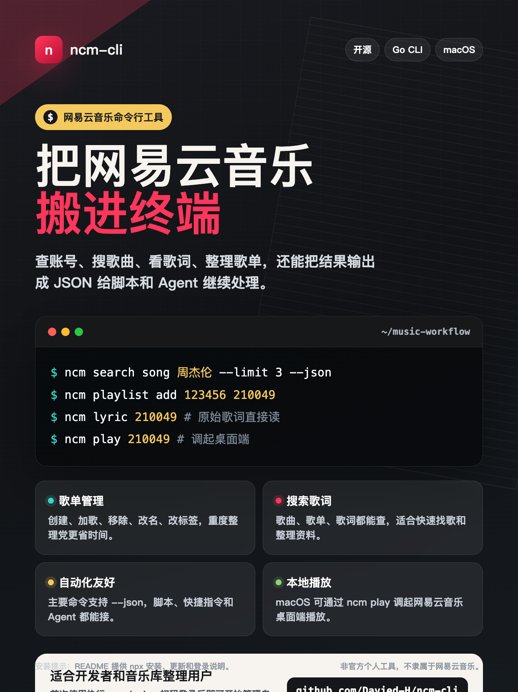
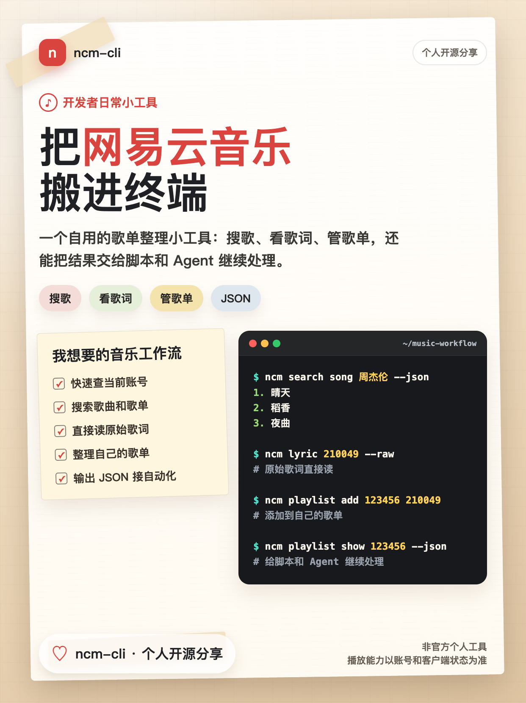
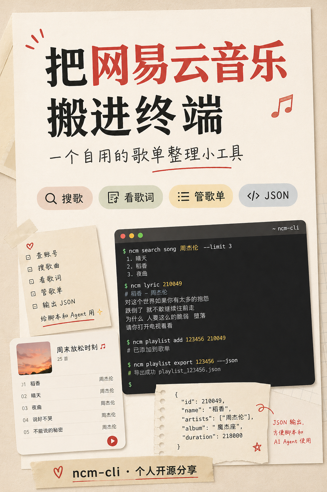

账号与登录
使用浏览器完成网易云登录，本地保存登录态；ncm me 快速确认当前账号。
ncm-cli 复用网易云 Web 端调用模型，覆盖登录、搜索、歌单管理、歌词、播放地址和桌面端播放。
使用浏览器完成网易云登录，本地保存登录态；ncm me 快速确认当前账号。
支持搜索建议、歌曲搜索和歌单搜索，可用 --json 输出给自动化流程。
查看结构化歌词信息，或用 --raw 直接读取原始歌词文本。
创建、加歌、移除、重命名、改标签、改描述和删除自建歌单。
主要读取命令和歌单写命令支持 JSON，方便接入脚本、快捷指令和 Agent。
在 macOS 上通过 ncm play 调起网易云音乐桌面端播放指定歌曲。
常用命令覆盖从发现音乐到整理歌单的完整路径；点击切换示例输出。
$ ncm search song 周杰伦 --limit 3 --json 1. 晴天 2. 稻香 3. 夜曲 $ ncm song 210049 --json # 输出歌曲、歌手、专辑、时长和权限信息
安装器会优先下载 GitHub Release 里的预编译二进制，默认写入 ~/.local/bin/ncm。
PLAYWRIGHT_DOWNLOAD_HOST=https://npmmirror.com/mirrors/playwright npx --yes github:Davied-H/ncm-cli install --dir ~/.local/bin --with-playwright-driver
ncm login
ncm login，扫码或网页登录；登录态保存到本机配置目录。
ncm me --json、ncm playlist list --json 验证账号和歌单。
仓库里的宣传图也可以直接用于分享或项目说明。


